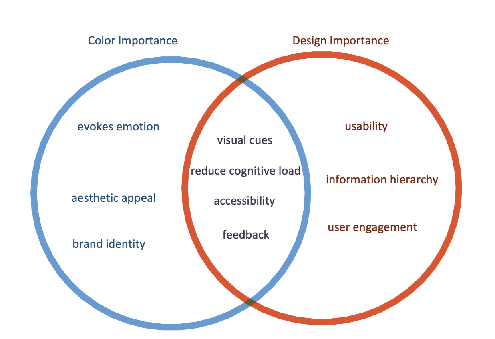

#ConceptMap
Colors I

Colors don't just enhance aesthetics but evoke emotions and reinforce brand identity,
influencing
user perception and engagement. Coupled with effective UI design, they guide usability,
information hierarchy,
and user engagement. The overlap of these two domains, especially in ensuring accessibility,
is
crucial to cater to a diverse audience. As a future software engineer collaborating closely
with designers and grasping these
principles leads to more cohesive and user-centric products. Overall, the nuances of color
and design in
software development are vital for product success and user satisfaction.
Eiseman, Leatrice. The Complete Color Harmony: Pantone Edition ; Expert Color Information
for Professional Color Results. Rockport, 2017.